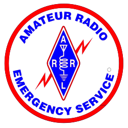

mini-SET 10.1
Net Manager Guide
A guide to the upcoming mini-SET for Net Managers

Michigan Section
Amateur Radio Relay League
Legal Notice
Copyright© 2010, the Michigan Section of the American Radio Relay League
The text of and illustrations in this document are licensed by the Michigan Section of the American Radio Relay League under a Creative Commons Attribution--Share Alike 3.0 Unported license ("CC-BY-SA"). An explanation of CC-BY-SA is available at http://creativecommons.org/licenses/by-sa/3.0/. The original authors of this document designate the Michigan Section of the American Radio Relay League as the "Attribution Party" for purposes of CC-BY-SA. In accordance with CC-BY-SA, if you distribute this document or an adaptation of it, you must provide the URL for the original version.
The Michigan Section, as the licensor of this document, waives the right to enforce, and agrees not to assert, Section 4d of CC-BY-SA to the fullest extent permitted by applicable law.
The ARRL Diamond and logo, the ARES logo and the ARPSC logo are registered trademarks of the American Radio Relay League in the United States and other countries.
All other trademarks are the property of their respective owners.
Abstract
The Michigan Section plans to have a number of exercises each year. This guide is intended to provide planning guidance for Net Managers preparing for the first of those exercises in 2010.